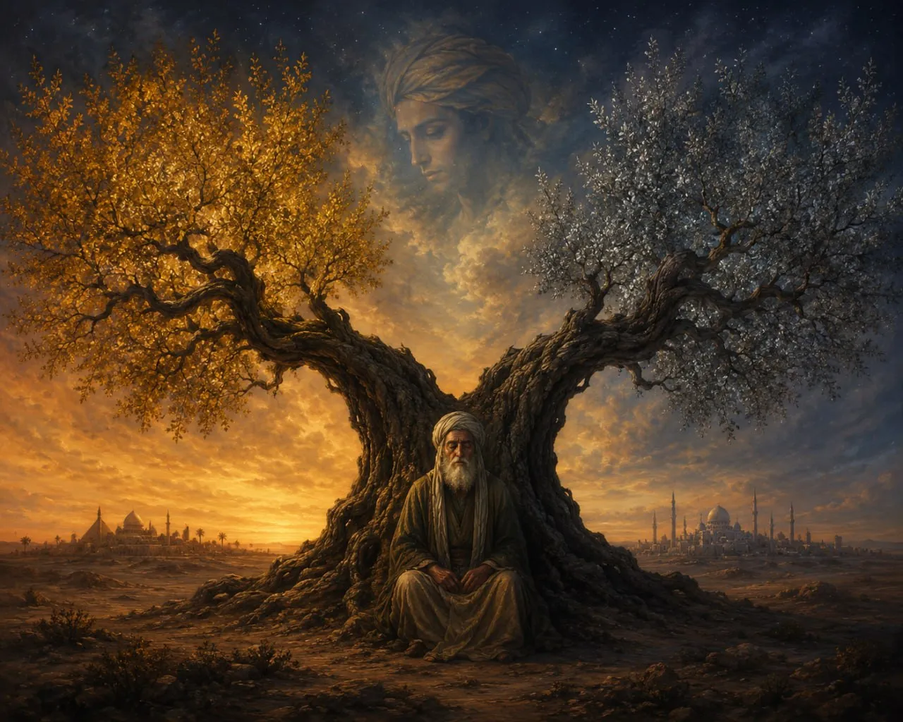

Dari Perpecahan Syiah Hingga Kiamat di Alamut
Lima esai yang menelusuri sejarah Syiah Ismailiyah: dari kematian Ja'far al-Shadiq yang memecah Syiah selamanya, kebangkitan Fatimiyah di Afrika Utara, pendirian negara Alamut oleh Hasan Sabbah, pembunuhan-pembunuhan fidā'iyyūn yang mengguncang imperium, hingga proklamasi Qiyama yang kontroversial.
Satu Kematian yang Memecah Syiah Selamanya
Kematian Ja'far al-Shadiq membelah Syiah menjadi dua jalur — Ismailiyah dan Itsna Asy'ariyah — yang nasibnya bertolak belakang selama berabad-abad.
→Sang Dai yang Disingkirkan oleh Imam yang Ia Bebaskan
Kebangkitan Fatimiyah di Afrika Utara, revolusi dari padang pasir yang mengguncang kekhalifahan Abbasiyah.
→Orang Tua dari Gunung yang Tak Pernah Turun
Hasan Sabbah mendirikan negara di puncak Alamut. Dari sana ia menggerakkan imperium tanpa pernah turun gunung selama 35 tahun.
→Belati di Jantung Kekuasaan
Nizam al-Mulk, Raymond II, Conrad of Montferrat — para fidaiyyun Ismailiyah menorehkan pembunuhan politik paling dramatis dalam sejarah abad pertengahan.
→Kiamat yang Membebaskan
Proklamasi Qiyama di Alamut — penghapusan syariat, pembebasan dari beban hukum, dan kontroversi terbesar dalam sejarah Ismailiyah.
→Kitab yang Bisu, Imam yang Berbicara
Ada dua Qur'an dalam Islam: al-Qur'ān al-Ṣāmit dan al-Qur'ān al-Nāṭiq. Arsitektur teologi paling fundamental Ismailiyah — dan mengapa ia bertahan 1.200 tahun.
→Enam Bagian, Tiga Kali Sehari
Du'ā' harian Nizārī Ismailiyah: 6 bagian, 3 kali sehari, 18 siklus. Seluruh teologi Qiyāma diringkas menjadi ritual harian — dan nama Aga Khan disebut 18 kali.
→Al-Ghazālī Menghunus Pedang
Faḍā'iḥ al-Bāṭiniyya — enam argumen al-Ghazālī yang membedah teologi Ismailiyah: ta'wīl tanpa kriteria, sirkularitas ta'līm, hingga ibāḥiyya. Pedang yang masih tajam 950 tahun kemudian.
→Dari Alamut ke Aiglemont, Dari Pedang ke Cek
Transformasi Ismailiyah: dari benteng Assassin ke jaringan filantropi global. Enam abad sunyi, kolonel Britania, jubilee emas & berlian, Harvard, dan paradoks yang belum selesai.
→Setelah 1.200 Tahun, Saya Berhenti di Sini
Lima pelajaran setelah menelusuri sejarah Ismailiyah: koherensi bukan kebenaran, yang mirip paling keras menyerang, yang kalah tidak selalu salah, syariat adalah fungsi waktu, dan satu pertanyaan yang tidak pernah selesai.
→Tiga Universitas, Tiga Dunia
Al-Qarawiyyin, Al-Azhar, Oxford — tiga universitas, tiga benua, tiga abad. Ketika masjid janda mengajarkan astronomi, Al-Azhar menjaga warisan dari api Mongol, dan Oxford remaja belajar dari terjemahan Arab.
→Sanad vs Spreadsheet
al-Suyuti menghitung dengan sanad. Sinai menghitung dengan algoritma. Lima abad terpisah, metode berbeda, kesimpulan sama: surah tidak turun sekaligus. Sebuah paradoks tentang siapa yang menyisipkan — dan atas otoritas apa.
→Saat Jenazah Nabi Belum Dikubur, Perpecahan Sudah Dimulai
Narasi lengkap: dari detik-detik wafatnya Nabi, klaim wasiat Ghadir Khumm yang diabaikan, hingga penentuan khalifah pertama di Saqifah.
Mimbar yang Dijual
Mimbar diisi oleh yang menghibur, bukan yang berilmu. Dari Lily Jay sampai poster "Mantan Pendeta" — tentang mualaf, viralitas, dan pertanyaan siapa yang berhak bicara atas nama agama.
→Sidang Isbat: Dua Pihak yang Saling Menyalahkan, dan Keduanya Benar
Setiap tahun sidang isbat digelar. Puluhan ormas hadir. Menteri mengetuk palu. Tapi keesokan harinya, semua tetap ikut metode masing-masing.
Lima Ayat yang Diam
Surah al-Fil. Tidak ada Abrahah, tidak ada Mekkah. Yang ada: burung, batu, dan daun dimakan ulat. Tentang teks yang diam — dan pertanyaan yang terus berubah dari para pembacanya.
→Qudamah, Qur'an, dan Slogan yang Tidak Jujur
Bagaimana slogan "kembali ke Qur'an dan Sunnah" seringkali menjadi senjata retoris yang mengabaikan kompleksitas sejarah penafsiran.
Empat Postur Hati Saat Berdoa
Ibn 'Atha'illah al-Iskandari mengajarkan empat keadaan hati dalam berdoa — dari yang paling rendah sampai maqam tertinggi para nabi.
"Emas tidak takut api. Iman tidak takut pertanyaan."
— ACE AFANDI